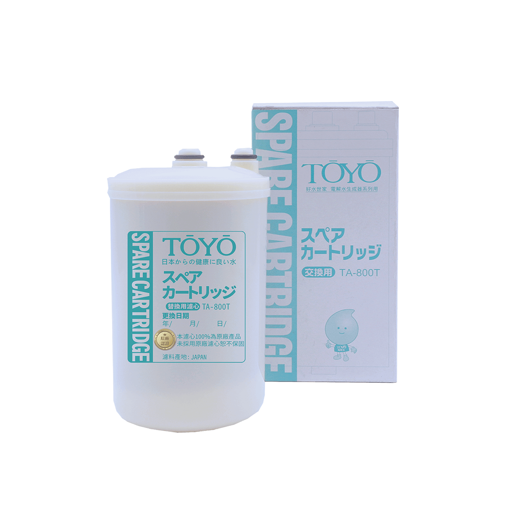
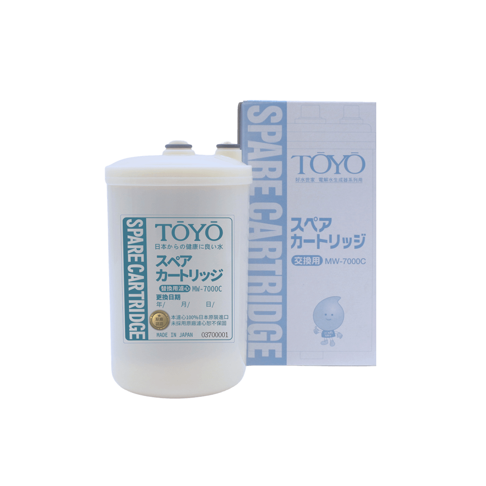
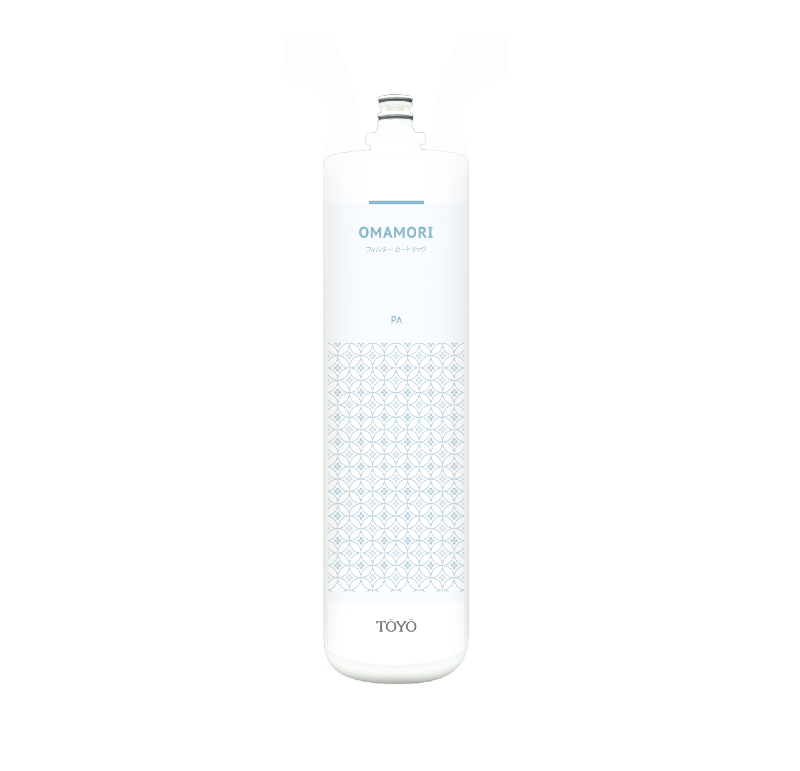
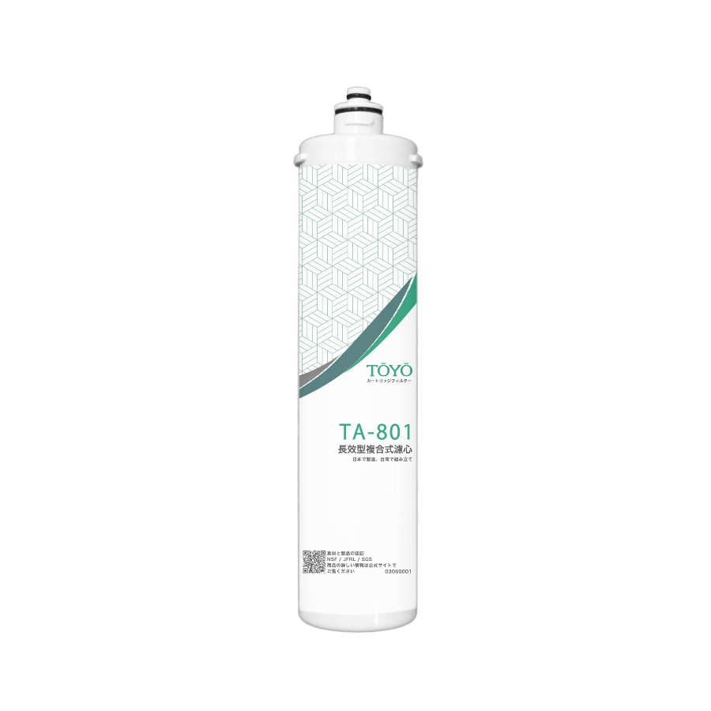
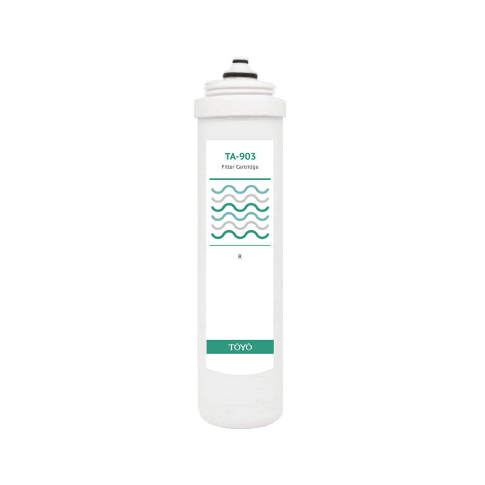
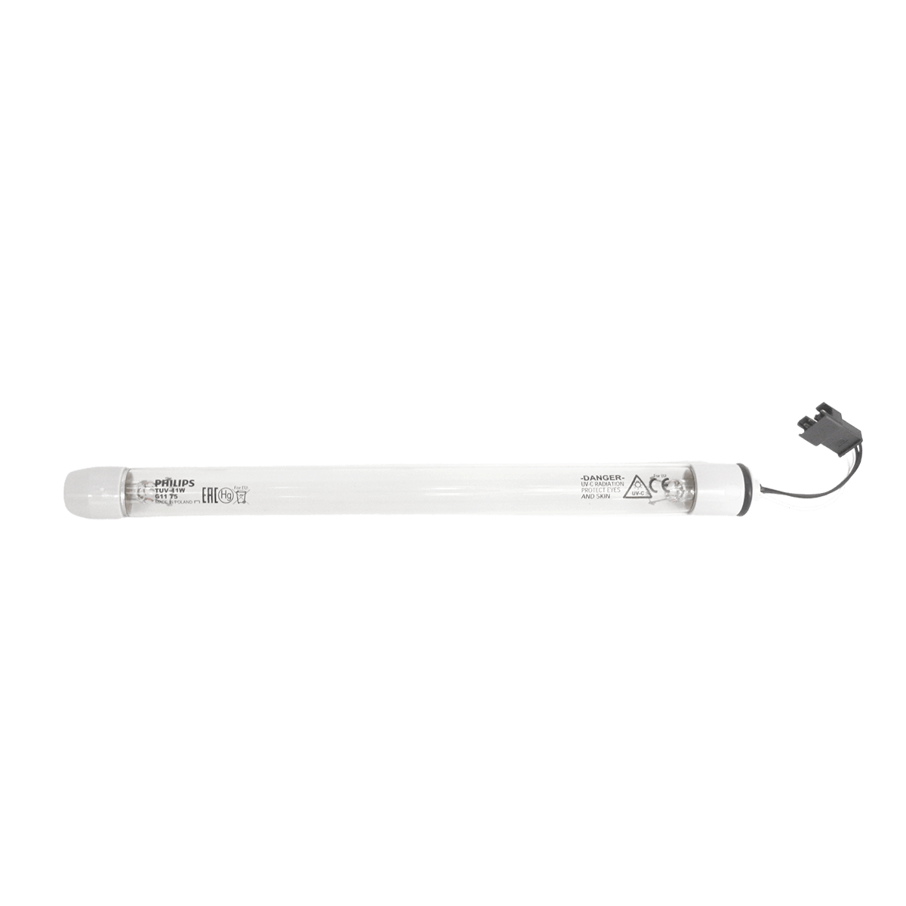

企業情報
ABOUT TOYO
商品情報
PRODUCTS
常見問題
Q&A
店舖一覽
SHOPS
最新情報
NEWS
企業情報
ABOUT TOYO
商品情報
PRODUCTS
常見問題
Q&A
店舖一覽
SHOPS
線上購買
商品情報
PRODUCT
全部商品
防疫專區
鹼性離子水生成器
SPACO/氣泡水機
生飲淨水器
居家凈水
濾心耗材
家居選物
濾心耗材
TW-308及TW-H1專用主體濾心TA-1100
TW-508專用主體濾心TA-1200

TYH/IE系列-日本機型主體濾心
TA-800T

TYH/IE系列-日本原裝主體濾心
MW-7000C
T-8專用濾心

淨水御守-雜質御守濾心
OMAMORI-PA
淨水御守-全效能御守濾心
OMAMORI-JC
淨水御守-抑垢御守濾心
OMAMORI-PAP

長效型複合式生飲濾心 TA-801
抑垢複合式生飲濾心 TA-801P
TA-903 PP棉濾心
TA-903 銀添活性碳濾心

TA-903 樹脂濾心
除氯省水蓮蓬頭 濾心2入組 TA-101
SPACO專用UF複合式濾心 SP-300UF

SPACO專用UV殺菌燈管